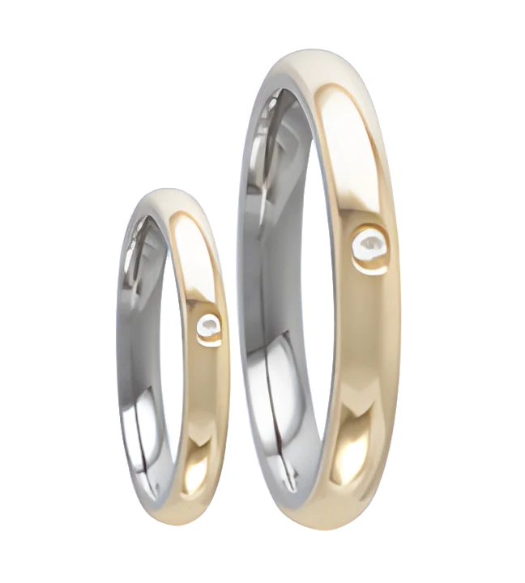

<!doctype html><html lang="pt-BR"><meta charset="utf-8"><meta name="viewport" content="width=device-width,initial-scale=1"><title>03LM-1 · Eterno Dourado</title><style>*{box-sizing:border-box}body{margin:0;background:#151513;color:#eee9db;font-family:system-ui}header{position:absolute;top:36px;left:5%;pointer-events:none}small{letter-spacing:.25em;color:#b6a27a}h1{font-family:Georgia;font-size:56px;font-weight:400;margin:14px 0}p{color:#a9a69f}canvas{width:100vw;height:100vh;display:block}footer{position:absolute;bottom:30px;left:5%;right:5%;display:flex;gap:12px;align-items:center;flex-wrap:wrap}a,button{color:#efe5ce;background:#292823;border:1px solid #625943;border-radius:24px;padding:12px 22px;text-decoration:none;cursor:pointer}footer span{color:#aaa;font-size:12px}aside{position:absolute;right:4%;top:30px}img{width:110px;opacity:.85}</style><header><small>ETERNO DOURADO / ESTUDO 3D</small><h1>03LM-1</h1><p>Anatômica · 3 mm · Uma pedra<br>Exterior dourado · Interior prateado</p></header><aside></aside><canvas></canvas><footer><button id="giro">Retomar giro</button><a href="03LM-1-unica.glb" download>Baixar GLB</a><span>Arraste para girar · Role para aproximar<br>Ø interno 18 mm e espessura 1,35 mm estimados</span></footer><script type="importmap">{"imports":{"three":"./vendor/build/three.module.js","three/addons/":"./vendor/examples/jsm/"}}</script><script type="module">
import * as T from 'three';import{GLTFLoader}from'three/addons/loaders/GLTFLoader.js';import{OrbitControls}from'three/addons/controls/OrbitControls.js';import{RoomEnvironment}from'three/addons/environments/RoomEnvironment.js';import{modelo}from'./pedra.js?v=1';
const r=new T.WebGLRenderer({canvas:document.querySelector('canvas'),antialias:true});r.setPixelRatio(Math.min(devicePixelRatio,2));r.toneMapping=T.ACESFilmicToneMapping;r.toneMappingExposure=1.15;const s=new T.Scene();s.background=new T.Color('#151513');const pm=new T.PMREMGenerator(r);const studio=new RoomEnvironment();studio.children.filter(o=>o.isMesh&&!o.isInstancedMesh&&o.material.emissiveIntensity>1).forEach(o=>{o.scale.multiplyScalar(1.35);});s.environment=pm.fromScene(studio,.008).texture;studio.dispose();pm.dispose();const c=new T.PerspectiveCamera(32,innerWidth/innerHeight,.001,10);c.position.set(.029,.017,.059);const ctrl=new OrbitControls(c,r.domElement);ctrl.enableDamping=true;ctrl.enablePan=false;ctrl.autoRotate=false;ctrl.autoRotateSpeed=.7;ctrl.minDistance=.032;ctrl.maxDistance=.12;new GLTFLoader().load(modelo,g=>{s.add(g.scene);window.modeloCarregado=true;},undefined,e=>{document.querySelector('header p').textContent='Falha ao carregar modelo';console.error(e)});document.querySelector('#giro').onclick=e=>{ctrl.autoRotate=!ctrl.autoRotate;e.target.textContent=ctrl.autoRotate?'Pausar giro':'Retomar giro'};function size(){r.setSize(innerWidth,innerHeight);c.aspect=innerWidth/innerHeight;c.updateProjectionMatrix()}addEventListener('resize',size);size();r.setAnimationLoop(()=>{ctrl.update();r.render(s,c)});
</script></html>
